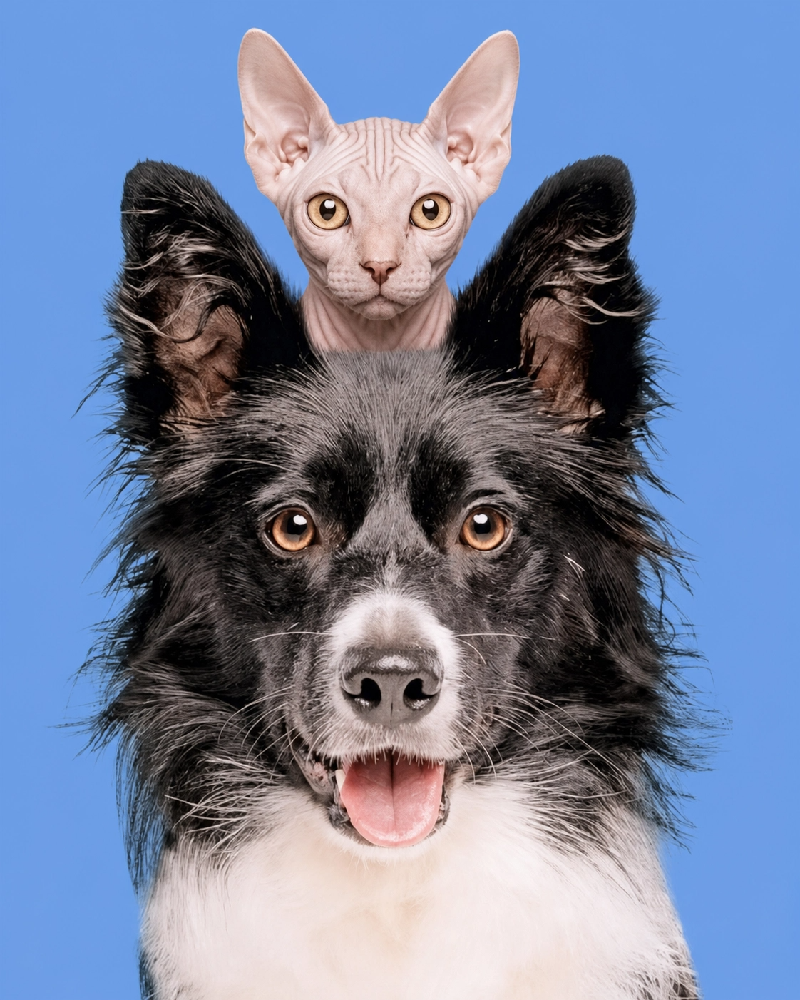
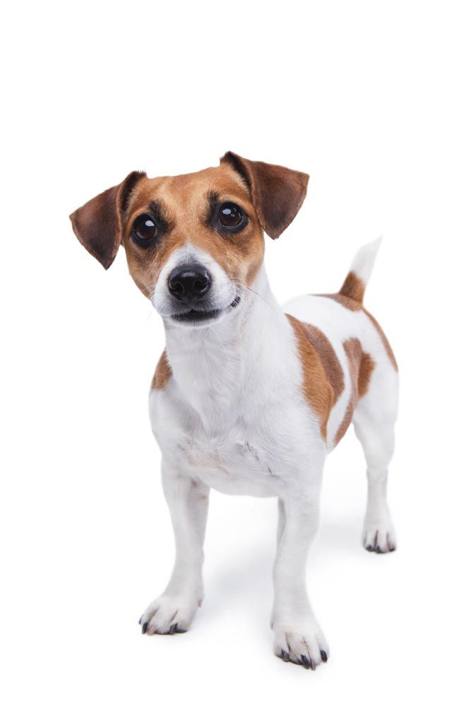
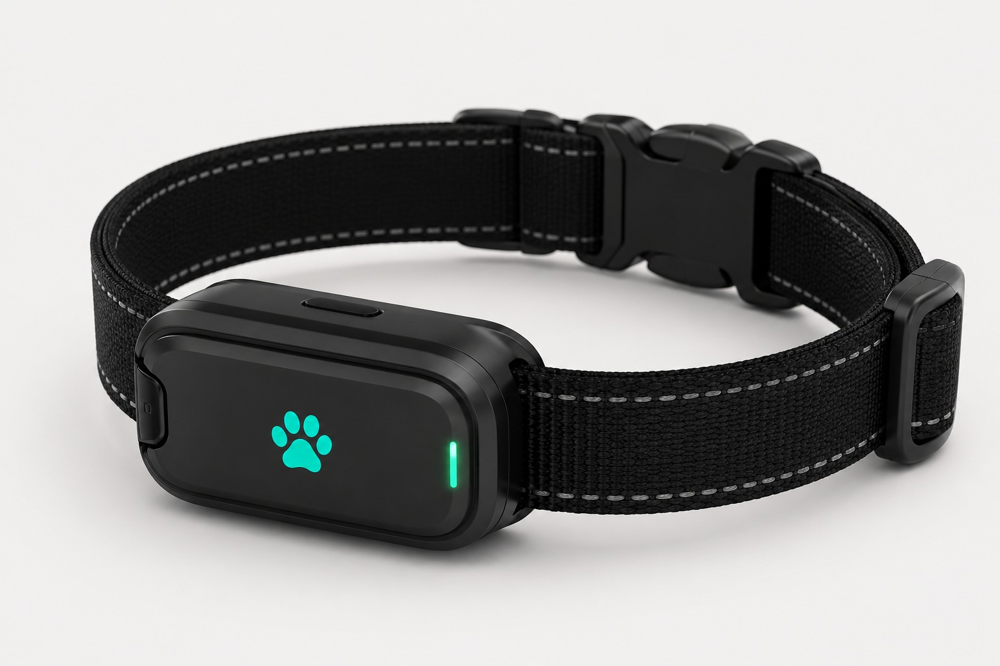

Cuide do seu pet com dados,
não com achismo.
A Pet Sync é a coleira com chip de rastreamento que transforma os sinais do seu cão ou gato em informação clara: batimentos, sono, temperatura, estresse e rotina, tudo direto no seu celular. Essa é uma tecnologia nova no Brasil, garanta o seu!


O chip fica embutido na própria coleira — funciona em cães e gatos de qualquer pelagem, inclusive raças sem pelo como o Sphynx.
O que a Pet Sync faz
Nosso produto é uma forma de garantir o bem-estar do seu pet. Com ele você acompanha, em tempo real, os sinais que realmente importam — e recebe um diagnóstico breve sempre que algo merece atenção.
Frequência cardíaca
Monitoramento contínuo dos batimentos, com alertas em variações fora do padrão do seu pet.
Nível de sono
Qualidade e duração do sono, dia após dia, pra você saber se o descanso está em ordem.
Temperatura corporal
Detecta mudanças de temperatura que podem indicar mal-estar antes que os sintomas apareçam.
Nível de estresse e rotina
Identifica mudanças de comportamento e rotina, com breves diagnósticos direto no app.
O chip de rastreamento embutido na coleira mantém a localização do animal sempre ativa — sem procedimentos invasivos, sem desconforto para o pet.
Tudo isso, direto no app
A coleira com chip de rastreamento conversa com o app Pet Sync em tempo real. Você abre, vê como o Thor está agora e recebe um aviso assim que algo sair do padrão dele.
Sinais vitais ao vivo
Frequência cardíaca, temperatura, respiração, atividade e sono — atualizados a cada poucos minutos.
Alertas que fazem sentido
O app avisa quando a temperatura sobe ou a atividade cai abaixo do habitual — sem alarme falso.
Compartilhe com o veterinário
Envie o histórico completo com um toque, direto da consulta ou de casa.
Olá, Ana! 👋
👤
Diagnósticos breves com IA
A Pet Sync usa IA para interpretar os dados da coleira e traduzir em alertas simples e úteis — para que você saiba o que fazer antes mesmo de ir ao veterinário.

⚠️ Os diagnósticos são orientações preliminares e não substituem avaliação veterinária.

Especificações Técnicas
- Material: Silicone hipoalergênico de alta durabilidade com fecho robusto em aço inoxidável.
- Peso: Apenas 35g (modelo padrão), garantindo conforto contínuo sem pesar no pescoço do seu pet.
- Funcionalidade: Monitoramento de saúde integrado com inteligência artificial, localização via chip e sincronização contínua.
- Bateria: Autonomia de até 14 dias de uso contínuo, com sistema de recarga magnética rápida.
- Resistência à Água: Certificação IP68 (totalmente à prova d'água e poeira, segura para banhos e natação).
- Sensores Integrados: GPS de alta precisão, acelerômetro de 3 eixos para monitoramento de atividade e sensor de temperatura.
- Conectividade: Bluetooth 5.0, Wi-Fi integrado e rede celular 4G (eSIM) para rastreamento global em tempo real.
Monte o pedido do seu Pet Sync
Isto é uma simulação — nenhum dado é enviado e nenhuma cobrança é realizada.